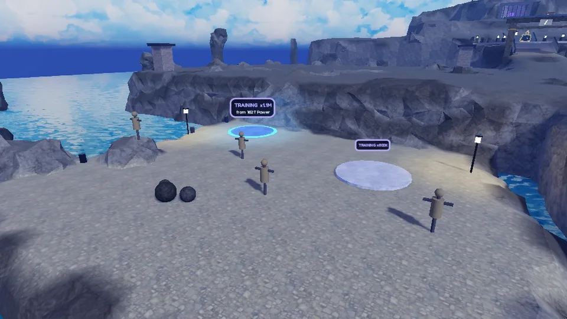
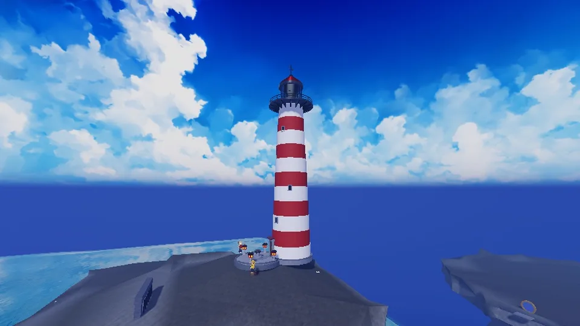

In development · coming to Roblox
ZORYT
Anime Training Simulator
Your village burned down in a single night. Train with Sensei Hanzo, grow stronger with every minute, beat bosses in combo battles and free world after world from the darkness.
Roblox game for PC and phones · 11 languages
A first look
Early shots from the sea arc, taken straight from the game in development.



Already in the game
8 ways to train
Every training ground has its own mini-game: Classic, Bubbles, Timing, Memory, Fireflies, Pearls, Salvage and Taiko drums. Auto-training helps too.
Bosses with combos
Every world has a great boss and a mini-boss guarding the gate. Dodge, strike, then land the combo with taps, swipes and rhythm right on time.
8 worlds, 2 arcs
From Sakura Village, Volcanic Wasteland, Astral Peaks and Mistwood to the sea arc: Shio Harbor, Coral Reef, Ship Graveyard and Storm Lighthouse.
Rebirth and the PATH
Spend your Power on swords and auras, then rebirth stronger: it opens the next world and new branches of the PATH skill tree.
50+ pets
One egg for every world: hatch otters, seagulls, crabs, little dragons, mantas, whales and more, and take your best team along.
Swords, auras, potions
Over 25 swords and 25 auras that glow around you, plus Strength, Luck and Healing potions.
Tower, houses, PvP
Climb the Endless Tower alone or with a team of up to 4, join a house of the Order of Sakura and test yourself in PvP arenas.
Events and invasions
Every 3 days a 24-hour event: Double Training, Lucky Hatch, Double Coins or Shadow Night. Shadow bosses invade the worlds, and every world has events of its own.
Between battles
Fishing and diving
Over 35 kinds of fish, sunken chests on the seabed and a ghost ship drifting through the fog.
Belt exams
Seven belts from white to black: pass Sensei Hanzo's exams one by one.
The Codex
Monsters, worlds, pets, gear and secrets like the paper cranes: everything you find goes into the Codex, with rewards for full collections.
Titles and emotes
Earn titles for your feats, like Black Belt, and greet other players with emotes.
Also
Still in development
ZORYT is not on Roblox yet: the first two arcs are being polished for launch. Next comes arc 3: Mirage Oasis, Wind Canyons, Buried Archive and Eye of the Storm. The big plan is 60 worlds in three Books: Starblade, Star Hunters and Dawn. No dates yet.
Questions and ideas: pegasohlib12@gmail.com